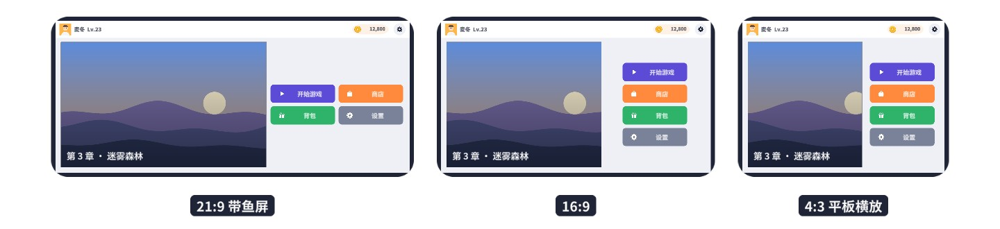
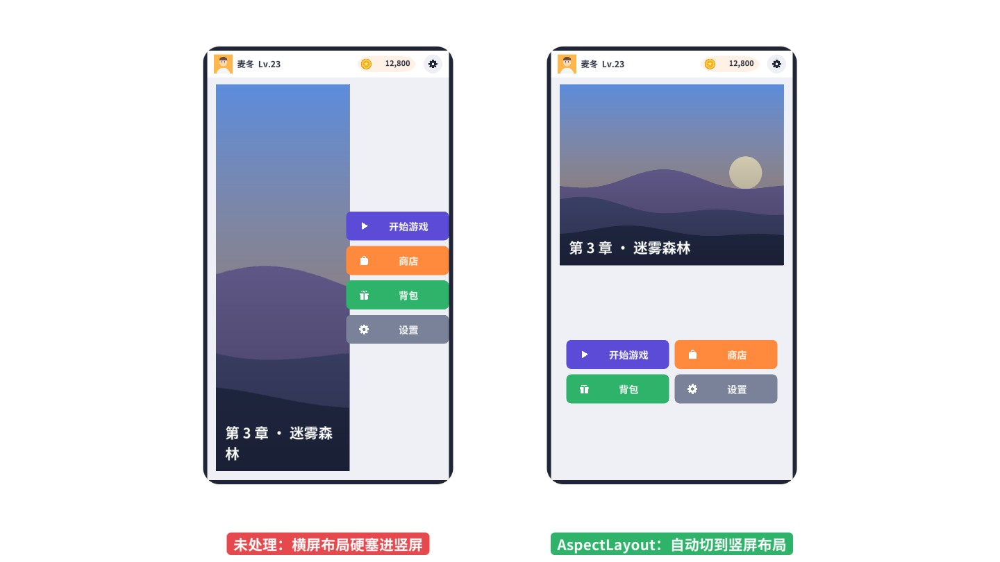
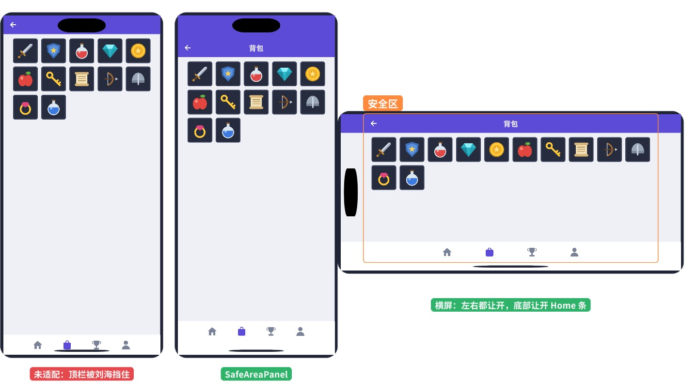
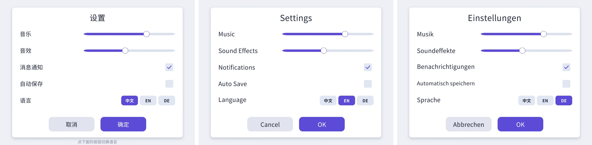
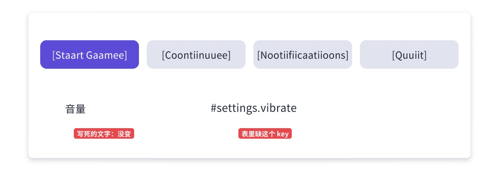
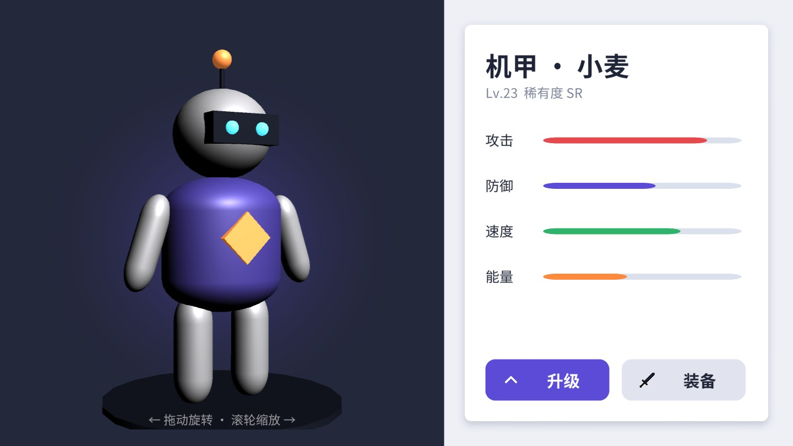
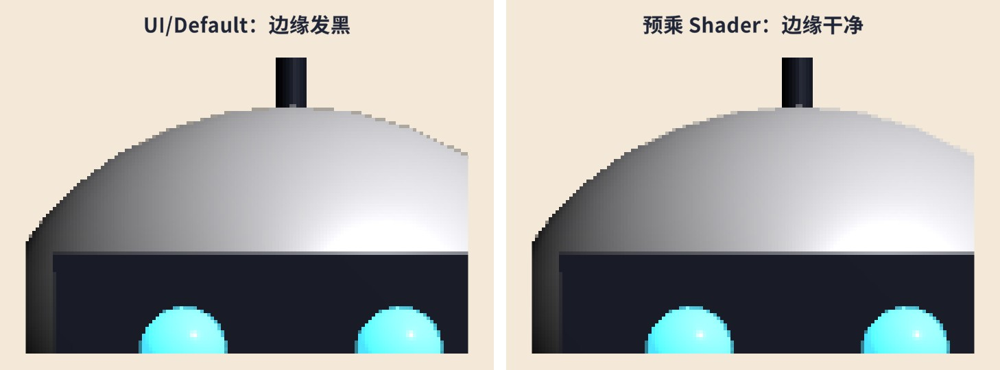
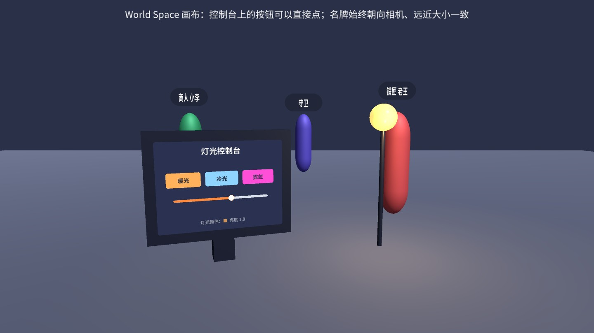

界面做出来只是第一步。上线之后，它要跑在各种比例的屏幕上、绕开刘海和圆角、翻译成好几种语言，还常常要和 3D 模型、粒子特效、场景里的物体混在一起。这一章把这些“做完界面之后才冒出来”的问题集中处理掉，每一类都给出一个能直接放进项目的组件。
第 2 章讲了 Canvas Scaler，第 3 章讲了锚点，很多人会觉得“适配”就是这两件事。确实，90% 的界面只要 Scale With Screen Size + 合理的锚点 就够了。但项目做到后期你会碰到三类它们解决不了的情况：
Einstellungen 十三个字母。所以我习惯把适配分成三层，每一层只解决自己的问题，互不越界：
这个分层有一个很实际的好处：排查问题时知道该去哪儿找。界面整体偏大偏小，看 CanvasScaler；某个元素离边太近、被刘海挡住，看锚点和 Safe Area；横屏好好的、竖屏挤成一团，才需要第三层。很多项目把三件事搅在一起——在代码里根据 Screen.width 手算每个元素的位置——结果每加一种机型都要改代码。
目标：一个游戏大厅，横屏时横幅在左、四个入口按钮在右；竖屏时横幅在上、按钮在下排成两列。21:9、16:9、4:3 都用横屏布局，但要各自好看；9:16 自动切到竖屏布局。拖动 Game 视图的分辨率就能看到切换。
思路：最直接的做法是做两个预制体，横屏一个、竖屏一个，转屏时销毁重建。它的问题是两份预制体要同步维护，界面状态（滚动位置、输入框里的字）在切换时丢失。更轻的做法是：只有少数几个“大块”的 RectTransform 需要在两种布局之间变化，给它们各记两份锚点快照，比例越过阈值时整体套用另一份。块内部的东西照常用锚点和布局组，自然跟着走。
为什么判断依据是“本节点自己的 rect”而不是 Screen.width / Screen.height？因为 Canvas 的 rect 就是屏幕按 CanvasScaler 换算后的大小，比例和屏幕一致；而用自己的 rect 还有两个额外的好处：它能嵌套使用（比如一个只占半屏的面板也想按自己的比例切换），也能在编辑器里放进“预览框”里测试——本节的配图就是把同一个大厅放进三个不同比例的“屏幕框”里拍的。
RectState 就是 RectTransform 的五个核心字段（第 3 章讲过，offsetMin/offsetMax 可以由它们算出来，不必另存）。每个 Entry 记一个目标的两份状态。切换逻辑如下：
几个要点：
OnRectTransformDimensionsChange。这是 UIBehaviour 提供的回调，节点尺寸变化时由 Unity 调用——转屏、改 Game 视图分辨率、父节点拉伸都会触发，不需要在 Update 里每帧检查。阈值 − 0.05；反过来要高于 阈值 + 0.05”。LayoutRebuilder.MarkLayoutForRebuild 让它在本帧的布局阶段重新排列（第 10、12 章讲过布局的两阶段）。[ExecuteAlways]，但只有勾选 previewInEditMode 时才会在编辑模式下自动套用快照。否则你在 Scene 里手动挪了横幅，一改 Game 视图尺寸就被快照覆盖，非常恼人。两份快照怎么录？提供了两个右键菜单：
Screen 节点，挂 ，在 Entries 里加两项，分别拖入 Banner 和 Menu。1920×1080，在 Scene 里把横幅摆在左边 60%、按钮区摆在右边 40%（用锚点拉伸，第 3 章的做法）。1080×1920，把横幅改成上半屏、按钮区改成下半屏，右键 。按钮区内部用的是 GridLayoutGroup，约束（Constraint）保持 Flexible：格子尺寸固定，列数由宽度自动决定。于是横屏右侧的窄区域里是一列，竖屏下半屏里是两列，21:9 的超宽屏右侧更宽，也自动排成了两列——这部分完全不需要切换逻辑参与，这就是“块之间用快照、块内部用布局”的分工。


object-fit: cover 的效果。背景图、横幅、封面图都应该这么做，不要直接把图片拉伸到任意比例。锚点快照能覆盖大部分需求，但有时你需要更多：
landscapeOnly / portraitOnly 两个数组正是为此准备的改布局组参数监听 onModeChanged 事件，在回调里改 GridLayoutGroup 的 constraintCount、HorizontalLayoutGroup 的 spacing 等换整个预制体两种布局差别大到连控件都不同（比如竖屏把列表改成卡片流），才值得做两套预制体，切换时把数据重新绑一次按设备类型而不是比例平板和手机比例接近但希望字号不同：可以结合 Screen.dpi 或物理尺寸判断，再改 CanvasScaler 的参考分辨率还有一个容易忽略的配合点：CanvasScaler 的 Match 值也应该随方向变。横屏游戏常用 Match = 1（按高度适配，宽屏两侧多出空间），可一旦允许竖屏，按高度适配会让竖屏下的界面被横向压得很窄。常见做法是在 onModeChanged 里把参考分辨率换成竖屏的 1080×1920、Match 改成 0（按宽度适配）。这样两种方向下“一个 UI 单位等于多少像素”都保持合理，快照里记录的尺寸也不会在切换后显得过大或过小。
Auto Rotation 并勾选允许的方向，系统才会在用户转动手机时改变屏幕方向；如果游戏只支持横屏，就锁定 Landscape Left/Right，此时 AspectLayout 只需要处理不同的横屏比例。第 3 章做过一个最简单的 SafeArea 组件：把 Screen.safeArea 换算成锚点。真正在项目里用，还要处理几个细节。先把概念摆清楚：
“整个界面缩进安全区”是最安全的做法，但视觉上往往不好看：顶栏的紫色背景在刘海两侧断开，露出一截页面底色；底部页签栏下面多出一条空白。好看的做法是背景延伸进去、内容留在里面。实现上有两种：
conform 只让开部分边——比如全屏背景层只让开左右（横屏时躲开刘海），而底部按钮层只让开底边。转屏、折叠屏展开、Android 用户切换“手势导航 / 三键导航”、iPad 进入分屏，都会让安全区变化，而且不一定伴随分辨率变化。所以不能只在 Start 里算一次。另一方面，每帧都去改锚点也不好——即使值没变，赋值本身也会让 RectTransform 走一遍脏标记检查。折中是每帧读一次 Screen.safeArea（很便宜），和上次比较，变了才改：
conform 是一个 [Flags] 枚举，Inspector 里会显示成可多选的下拉框。没勾的边把锚点“推回”屏幕边缘（0 或 1）。extraPadding 用于“安全区之外再留一点呼吸空间”，单位是画布像素，会被 CanvasScaler 正常缩放。

两个办法：
Screen.safeArea、Screen.cutouts、分辨率、DPI 都会返回那台设备的值，并画出设备外框。这是最推荐的做法。simulateInEditor，填一组内缩比例（左、下、右、上）。不依赖任何窗口，适合截图、写自动化测试。配套场景默认开着它，读者打开就能看到效果；要用 Device Simulator 测试时先取消勾选。Screen.safeArea 等于整个（缩小后的）屏幕；勾选后画面铺满全屏，才需要自己做安全区适配。两种选择都合理，但要和美术、策划约定好。多语言（本地化，Localization，常缩写为 L10n）的代码其实不难，难的是一开始没想清楚，后期返工。动手前先定下这几件事：
menu.start、settings.music、shop.buy。不要用中文原文当 key（原文一改 key 就变），也不要用纯数字 ID（没人记得 10086 是什么）表用什么格式CSV 或 JSON 都行。CSV 的优势是翻译和策划可以直接用 Excel / WPS / 在线表格编辑，一行一个 key、一列一种语言，一目了然缺翻译怎么办回退到默认语言；缺 key 则显示 #key，让问题在测试时一眼可见，而不是默默显示空白带参数的句子“你有 {0} 个金币”整句进表，参数用占位符。不要拼接：“你有” + n + “个金币”在别的语言里语序完全不同字体不同语言的字形覆盖不同。本书配套的思源黑体子集只含 GB2312 和拉丁字母，日文假名、韩文会显示方块；真实项目要给每种语言准备字体或配置 TMP 的 Fallback（第 5 章）目标：一张 CSV 表管理所有文本；运行时按 key 取当前语言的字符串；切换语言时通知所有界面刷新；记住玩家的选择，首次启动按系统语言选。
表放在 Ch19/Resources/Ch19/strings.csv，长这样（节选）：
key,zh,en,de,note
menu.start,开始游戏,Start Game,Spiel starten,
settings.notify,消息通知,Notifications,Benachrichtigungen,德语往往比英语长 30% 以上
coins,"你有 {0} 个金币","You have {0} coins","Du hast {0} Gold",带参数：用 Loc.Format
dialog.quit.body,"确定要退出游戏吗？
未保存的进度将会丢失。","Are you sure you want to quit?
...",带换行的单元格要用双引号包起来
注意最后一行：单元格里有换行，就必须用双引号包起来；单元格里本身有双引号，要写成两个双引号 ""。这是 CSV 的标准规则（RFC 4180），Excel 另存为 CSV 时会自动这样处理。所以解析器不能简单地 Split(',')，要逐字符处理引号状态：
读表时，表头第一列是 key，后面每列是一种语言，遇到以 note 开头的列就停止（备注列给翻译看，程序不用）：
设计上的几个取舍：
Changed 事件让界面层自己订阅、自己刷新，Loc 不需要知道有哪些界面存在。Application.systemLanguage 返回 SystemLanguage 枚举，映射到表里的语言代码。玩家手动选过之后存进 PlayerPrefs，以后以玩家的选择为准。Load(string csvText) 接口不变。目标：给任意 TMP 文字挂上组件、填一个 key，它就显示当前语言的文字；切换语言时自动刷新；不同语言可以用不同的字体和字号倍率。
逐段说明：
MissingReferenceException。m_BaseSize 在 Awake 里记下 Inspector 里填的字号，各语言在它基础上乘倍率。如果每次切换都在当前字号上乘，切几次字号就越来越大。LocFontSet 里三种语言都指向同一个字体资源、只有字号倍率不同。你的项目里把 en / de 的字体换成一款拉丁字体即可，代码不用改。日文、韩文也是同样的思路：每种语言一个 TMP 字体资源，或者以一个主字体为准、把其他语言的字体挂成 Fallback。场景里的设置面板，每个文字都挂了 LocalizedText，底部三个按钮由 LanguageButtons 调 Loc.SetLanguage。三种语言的效果：

LocalizedSprite 组件，按语言从表里取精灵名再加载。能避免就尽量避免：把字从图里拿出来，用 TMP 叠在图上，一套图走天下。同一句话在不同语言里的长度差别很大。经验上，英文比中文长 1.5～3 倍（按字符宽度算），德语、俄语又比英语长 20%～40%；反过来日文、韩文和中文接近。界面按中文设计、上线后翻成德语，最常见的事故就是文字冲出按钮。三种对策：
enableAutoSizing + fontSizeMin/Max。简单，但有下限：缩得太小就看不清；而且每次改文字都要多次排版试字号——第 20 章实测它让单段文字的重建耗时变成原来的 5 倍左右，不要用在每帧变化的文字上③ 弹性布局让容器跟着文字长：按钮挂 HorizontalLayoutGroup + ContentSizeFitter，标签允许换行，列表行高由内容撑开（第 10 章）。界面要有足够的“弹性空间”，适合按钮、标签、对话气泡④ 截断 + 提示TMP 的 overflowMode = Ellipsis，放不下显示“…”，长按或悬停显示全文。适合列表里的名字、描述等次要信息实际项目里通常组合使用：按钮用 ③，标题用 ② 并把下限设得保守一些，列表里的次要文字用 ④。图 19-8 中③的做法是给按钮加 HorizontalLayoutGroup（左边距留给图标、图标本身用 LayoutElement.ignoreLayout 排除在布局外）、ContentSizeFitter 横向取 Preferred Size，再加一个 LayoutElement 把 minWidth 设成 380——中文短的时候按钮保持设计宽度，外语长了才变宽。
翻译往往在开发后期才到位，等到那时再发现排版问题就晚了。伪本地化（Pseudo-localization）是一个很实用的技巧：自动生成一种“假语言”，把英文拉长 30% 以上并加上括号，用来提前测试：

它一次能暴露三类问题：写死的文字（没变成假语言的就是没走本地化的）、缺失的 key（显示成 #key）、长度不够（括号被截掉就说明放不下，括号的作用就在这里）。建议在测试版本里加一个开关，QA 每轮测试切到伪语言过一遍。
Unity 官方有一个本地化包 com.unity.localization（Package Manager 里搜 Localization），功能比本章的轻量方案完整得多：String Table / Asset Table（文本表和资源表，资源表能按语言换图片、音频、字体）、Smart Strings（复数、性别、条件格式）、CSV / Google Sheets / XLIFF 导入导出、按语言异步加载（基于 Addressables）、伪本地化、编辑器内预览。界面这边用 LocalizeStringEvent 一类的组件把表项绑定到文字上。
两者的核心思想一致：key → 表 → 当前语言 → 通知界面刷新。从轻量方案迁移到官方包时，key 和表格内容可以直接导入，主要工作是把 LocalizedText 换成官方组件。具体 API 以你使用的包版本文档为准（本书配套工程没有安装该包）。
目标：角色详情界面左侧显示一个 3D 角色，玩家在上面左右拖动可以旋转、松手后有惯性，滚轮缩放；界面的背景光晕能透过模型周围显示出来。
原理：UGUI 本身画不了 3D 模型，但它能画一张贴图。让一台专用相机只拍角色，输出到 RenderTexture（渲染纹理），再用 RawImage 显示这张纹理，3D 模型就“进了” UI。这样做的好处是模型完全按 UI 的规则排序和裁剪——可以被弹窗盖住、可以放进 ScrollView、可以做淡入淡出，没有任何深度冲突。
RenderTexture 的创建和释放放在组件的启用 / 禁用里：
要点：
rect.size 是画布单位，乘以 canvas.scaleFactor 才是像素（第 2 章）。写死 512×512 的话，在 2K 屏上放大显示会糊，在小屏上又浪费显存。resolutionScale 留给低端机降分辨率用。UIModel 层，模型放进这一层，主相机的 Culling Mask 去掉它、展示相机只勾它。拖拽部分实现了 IBeginDragHandler / IDragHandler / IEndDragHandler / IScrollHandler（第 11 章），旋转量直接取 PointerEventData.delta.x：
惯性用的是“指数衰减”：每帧速度乘一个与帧时间相关的系数 1 - e^(-damping·dt)，帧率高低都能得到同样的减速手感。时间用 Time.unscaledDeltaTime，因为角色界面常在游戏暂停（timeScale = 0）时打开。

透明背景的 RT 有一个容易被忽视的问题：模型边缘有一圈暗边，在浅色背景上尤其明显。原因是相机渲染时，边缘的抗锯齿像素已经和“透明黑色”背景混合过了——颜色已经乘过一次 alpha，也就是预乘（Premultiplied）格式。而 UI/Default Shader 在片元里会再乘一次 alpha（color.rgb *= color.a，见第 14 章对 UI-Default.shader 的讲解），半透明的边缘就被乘了两次，变暗。
解决办法是给 RawImage 换一个“认为贴图已经预乘过”的 Shader，只在这一点上与 UI/Default 不同：
混合模式保持 Blend One OneMinusSrcAlpha（预乘混合，Unity 2022.3 的 UI/Default 本身也是这个混合模式），只是片元里不再用贴图的 alpha 去乘贴图的 rgb。顶点色的 alpha（包括 CanvasGroup 的透明度）仍然要同时乘到 rgb 和 a 上，界面淡入淡出才正确。

sRGB（RenderTextureReadWrite）设置。有时还需要“点模型的武器弹出武器详情”。RawImage 只是一张图，UGUI 不知道图里画的是什么，要自己做一次坐标换算：在 RawImage 上实现 IPointerClickHandler，用 RectTransformUtility.ScreenPointToLocalPointInRectangle 把点击位置换成 RawImage 内的本地坐标，再归一化成 0～1 的 UV（考虑 uvRect），然后调用展示相机的 ViewportPointToRay(uv) 得到一条射线，用 Physics.Raycast 去打模型上的 Collider。这条链路的每一步在第 3、11 章都出现过，只是把“屏幕 → UI”和“视口 → 世界”两段接在了一起。
扩展方向：多个角色同屏展示（如阵容界面）时，不要每个角色一台相机一张 RT——可以一台相机拍一排模型、输出到一张大 RT，再用多个 RawImage 的 uvRect 各取一块；或者干脆把这部分做成真正的 3D 场景叠在 UI 下面（Camera 模式画布，见下一节）。
UI 上加粒子特效（按钮流光、开宝箱的星星、升级的光柱）是另一个高频需求，也是排序问题的重灾区。先理解规则，再看做法。
Screen Space - Overlay 画布不经过任何相机，Unity 在所有相机渲染完之后才把它直接画到屏幕上（第 2 章）。粒子系统是普通的 3D 渲染器，必须由相机渲染——于是它永远在 Overlay 画布下面，不管你把它的 sortingOrder 设多大。想让粒子和 UI 交错，画布必须改成 Screen Space - Camera（或 World Space），让 UI 和粒子由同一台相机渲染、参与同一套排序。
Camera 模式的画布在渲染上就是一个“透明物体”，和粒子、精灵一样进入相机的透明队列，按以下优先级从先到后排序（先画的在下面）：
sortingOrder、粒子 Renderer 的 sortingOrder；所以靠距离排序是不可靠的，正确的做法是让每一层都有明确不同的 sortingOrder：
目标：开宝箱界面，星星粒子从宝箱里冒出来，盖在背景和宝箱上面，但被“恭喜获得”弹窗挡住。
Screen Space - Camera，Render Camera 拖入主相机，Plane Distance 都填 100。背景画布 Order in Layer = 0，弹窗画布 = 10。Scaling Mode 改成 Hierarchy：这样它会继承画布的缩放，Start Size、Start Speed、Shape 半径都可以直接按“画布像素”填（比如大小 40～90、速度 160～420）。默认的 Local 模式下画布那极小的缩放不会作用到粒子大小上，粒子会大得离谱。UIParticleOrder 组件，Offset 填 5：它会把粒子的 sortingLayer / sortingOrder 设成“所属画布 + 5”。为什么不直接在 Inspector 里把粒子 Renderer 的 Order in Layer 填成 5？可以，但界面多了以后，画布的 order 会被 UI 框架动态分配（第 16 章的层级管理：Normal 层 100、Popup 层 200……），粒子写死的数字很快就对不上了。UIParticleOrder 用的是相对值，界面挪到哪一层，粒子跟到哪一层。SortingCanvas 找的是“真正决定排序的画布”：最近的根画布，或者开了 overrideSorting 的嵌套画布——没开 Override Sorting 的嵌套画布沿用父画布的排序，它自己的 sortingOrder 不起作用。
反过来的需求也很常见：按钮上冒粒子，但按钮上的文字、红点要压在粒子上面。这时给“要抬上去的元素”加一个开启 Override Sorting 的嵌套画布：
第三方的“UI 粒子”方案（把粒子网格转换成 UI 网格、直接由 Canvas 绘制）可以让粒子在 Overlay 画布里正常排序、被 Mask 裁剪，代价是粒子顶点每帧都要进入 Canvas 重建。本书不放第三方代码，思路在第 13 章的自定义 Graphic 里都讲过：在 OnPopulateMesh 里读 ParticleSystem.GetParticles 的结果、为每个粒子生成一个四边形即可。
World Space 画布是摆在 3D 场景里的一块“平面”，有自己的位置、旋转和缩放，会被 3D 物体遮挡，也有近大远小。游戏里的电脑屏幕、自动售货机、VR 里的菜单、NPC 头顶的名字，都适合用它。第 2 章讲了它的基本设置，这里补全交互相关的细节。
World Space 画布的 RectTransform 尺寸单位是世界单位（米）。直接把宽高设成 1.4×1.0，再在里面放 36 号字的文字，字会大得离谱（36 米）。约定俗成的做法是：宽高按像素设计（如 1500×1100），缩放设成 0.001，画布在世界里就是 1.5 米 × 1.1 米，里面的字号、间距都按熟悉的像素尺度来填。
World Space 画布的点击由它自己的 GraphicRaycaster 处理：从 Event Camera（画布上的 worldCamera 字段，Inspector 里叫 Event Camera）发出一条穿过鼠标位置的射线，看打中了画布上的哪个图形。所以：
Camera.main，主相机没有 MainCamera 标签的话就完全点不到。Blocking Objects 设成 Three D（需要 3D 物体有 Collider），射线打到 Collider 的距离比 UI 近，UI 就不响应。目标：场景里一台控制台，屏幕是 World Space 画布，上面三个按钮切换路灯颜色、一个滑块调亮度；三个 NPC 头顶有名牌，始终面向相机，而且不管远近在屏幕上一样大。
控制台的逻辑很普通——按钮回调改 Light 的颜色，滑块改强度（注意用 renderer.material 而不是 sharedMaterial 改灯泡颜色，前者会复制一份材质实例，不会改到资源文件）：
头顶名牌是这一节的重点。第 17 章用的是“Screen Space 画布 + 每帧 WorldToScreenPoint 换算”的做法；这里给出另一种：名牌本身就是 World Space 小画布，挂在 NPC 身上，每帧只需要转向相机：
两个细节：
LookAt(camera.position) 的话，屏幕边缘的名牌会侧过来变成梯形；用相机的 forward 作为名牌的 forward，所有名牌都和屏幕平行，看起来像 2D 的。
经验上，同屏名牌在几十个以内、需要遮挡效果的（MMO 里的 NPC、FPS 的队友标记），两种都可以；名牌多到上百个（大规模战斗的血条）时，Screen Space 方案合批后的优势会很明显。
CanvasScaler.dynamicPixelsPerUnit 生成，默认值太低。换成 TMP 就没有这个问题。另外，World Space 画布的 GraphicRaycaster 在没有可点击元素时（比如名牌）应当删掉，否则每次点击都要白白检测一遍。适配和本地化的问题有一个共同点：开发机上永远看不出来，一上线就被玩家截图发到论坛。下面这份清单是我在项目里每次提测前都会过一遍的，按“发现成本从低到高”排列：
| 检查项 | 怎么查 | 常见问题 |
|---|---|---|
| 极端比例 | Game 视图依次切 4:3、16:9、19.5:9、21:9 和对应竖屏 | 按钮被挤出屏幕、背景图露边、横幅变形 |
| 刘海与圆角 | Device Simulator 选两台刘海屏、一台挖孔屏，各转一次屏 | 关闭按钮在右上角被圆角切掉；横屏时刘海挡住左侧血条 |
| 分屏 / 折叠屏 | 真机分屏，或者 Device Simulator 里切换可折叠设备 | 安全区变化后没有刷新；只在 Start 里算了一次 |
| 伪本地化 | 切到 pseudo 语言，所有界面过一遍 | 写死的字、缺 key、被截断的括号 |
| 最长语言 | 切到最长的语言（通常是德语、俄语） | 按钮文字溢出、Auto Size 缩到看不清、两行文字压住下面的控件 |
| 字形覆盖 | 把整张表的每种语言拼成一段文字，用 TMP 的 HasCharacters 检查缺字 | 某个生僻字、全角符号、货币符号显示成方块 |
| 动态内容 | 玩家昵称、公会名填最长允许长度、填 emoji | 昵称把排行榜一行撑成两行；emoji 显示成方块（需要在输入时过滤或准备 emoji 字体） |
| 数字与日期 | 切到英文 / 德文，看金额、日期、百分比 | 德语小数点是逗号；日期顺序不同；“1,000” 在部分地区是一个小数 |
最后一条值得多说一句：float.ToString()、DateTime.ToString() 默认使用系统当前的区域设置（CultureInfo），德语系统上 3.5f.ToString() 得到的是 "3,5"。显示给玩家的数字按当前语言格式化是对的，但存档、网络协议、配置表解析一律要用 CultureInfo.InvariantCulture，否则德国玩家的存档在中国服务器上解析会出错——这类 bug 在开发团队里几乎不可能被自己发现。
阿拉伯语、希伯来语这类从右向左书写（RTL）的语言是另一个量级的工作：不只是文字方向，整个界面的布局都要镜像（返回按钮跑到右上角、进度条从右往左涨）。TMP 本身对 RTL 的支持有限，一般需要专门的文字处理插件。如果项目有进入中东市场的计划，最好在立项时就评估，而不是上线前一个月才开始做。
Screen.cutouts 里的挖孔矩形而不是整条安全区：顶栏左边的头像正好在挖孔下面时向右挪，否则保持原位。coins.one 和 coins.other 两行，Loc.Plural("coins", n) 按英语规则（n == 1 用 one）选择。想一想：为什么中文不需要这一套，而俄语需要三种以上的形式？uvRect 各显示一个，点哪个就只旋转哪个。比较它和“五台相机五张 RT”的显存占用。